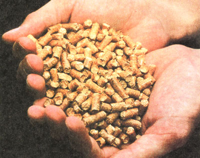

The mechanics of a pellet stove, in this case a Brems Eastman freestanding model: the hopper(1), which can hold enough pellets for several days; screw auger (2), which feeds pellets to the fire; exhaust system (3), heat vent (4), firebox enclosure (5), ash pan (6), fire grate (7), and draw vent (8).